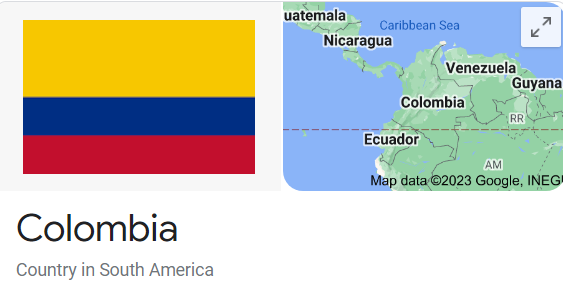

According to Colombian law how many times is the national anthem played a day?
Answer: Twice

Culture Fact #78. According to Colombian law, the national anthem or "Himno Nacional de la República de Colombia" plays twice a day.
It plays once at 6 am and again at 6 pm. The law requires that TV broadcasts and radio stations do this every day.